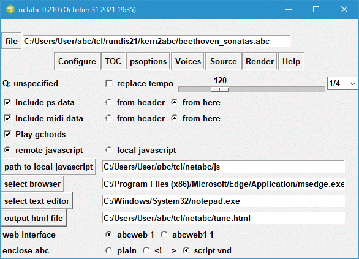

netabc.zip and netabc.exe were updated on February 06 2022.
Netabc.tcl is a user interface for creating web pages that display the contents of abc music notation files using Jef Moine's Abc2svg JavaScript library. Every browser whether it is on a desktop, cellphone or tablet has a JavaScript engine that can render this music. Since the music notation displays and plays on your browser, you no longer need external applications such as a PostScript or Pdf viewer or even a midi player.
The program is a tcl/tk script so it requires tcl/tk 8.5 or 8.6 to be installed on your system. Windows users can avoid installing tcl/tk on Windows, by running the netabc.exe executable which contains the tcl/tk interpreter. Otherwise you can get tcl/tk for free from www.activestate.com.
Using netabc, you open an abc music notation file, select one of the tunes, and render it in common music notation in your browser and play the contents. Netabc.tcl creates an html file containing this tune and links it to the JavaScript library. The temporary html file is then loaded into your browser. The browser executes the JavaScript and replaces the abc notation by scaleable vector graphics (svg). This graphics displays the tune in common music notation. If you click on one of the displayed notes, the browser will play the music and follow along. The generated html file is stored on your computer, allowing you to view or edit it.
Though it is possible to create such web pages with just an ordinary text editor, this is not a trivial task. Netabc provides several different methods for embedding the abc file. It allows you to experiment with the different formatting options. Different MIDI musical instruments can be assigned to the various voices.
It is recommended that you make a folder called netabc and put one or both of these files inside that folder. This folder will be used to store various files that save the state of netabc as well as the temporary html output file.
The program links to the abc2svg JavaScript library on Jef Moine's web site; however, if you have a local copy of this library on your system, the program can be configured to go to your local library. The archive js.zip contains the main files that you need.
This archive becomes outdated very rapidly, since Jef Moine creates a new version of this library almost every day. You can find this on his repository. Before you can use this library it is necessary to build it. See the readme.md for more instructions. Guido Gonzato posts a built library on his web site, abcplus.sourceforge.net which he updates frequently.
Netabc contains various other convenient features. (1) To prevent overloading abc2svg with a large file, netabc forwards only the selected portion of the file. (2) When tempo, formatting or MIDI parameters are missing, netabc allows you to embed your own parameters into the abc notation.
On running netabc.tcl for the first time, the program will determine which platform it is running (Windows or Linux) and set itself appropriately. You should check this setup by clicking on the top Configure button. The following image shows how the configuration window may look on your system.

The important setup up parameters are in the lower half of the window, starting with the radio buttons remote javascript and local javascript. By default remote javascript is ticked, which tells the generated web page to load the javascript code from Jef Moine's web site.
If you are running on Windows, the program will assume that you have the Microsoft Edge browser or the Google Chrome browser. If neither of these browsers are present, then you need to specify the path to a suitable substitute. Either type this into the entry box or use the select browser to find the browser executable on your system. On Linux, the program will attempt to connect with the Firefox browser.
Similarly, you need to specify the path to your text editor, to allow you to view contents of the html file. Notepad.exe is the text editor that comes with Windows.
By default, netabc records its html output in a file called tune.html; however, you can change its name and path. Note that the full path name should be given, especially for the Windows operating system.
If you decide to download the abc2svg javascript library to your computer and wish to link to a local version of the library, then you should tick the local javascript radio button and indicate the path to the library in the appropriate entry box. (If you are using the folder browser, note that you must be inside this folder and see the Scc1t2 subfolder before clicking on the select button.)
Abcweb can run with one of the 2 web interfaces, abcweb-1.js or abcweb1-1.js described in Jef's readme file. Abcweb1-1.js was designed to allow the user the choice of a particular tune from a selection of tunes. Either interface is fine to use.
Certain symbols such as < > and & may occur in the abc notation are also html control characters. In order to avoid these issues, you can enclose the abc notation into one of two structures rather than leaving it in the unprotected state (plain). Netabc allows you to choose any one of the two methods. Script vnd looks a little cleaner. Do not select plain unless you know those control characters will never be present in your abc file.
The configuration information is stored in the in the netabc.ini, so you only need to do this only once. At this point you are ready to use netabc.tcl
Abc2svg can now play guitar chord indications to a limited extent. To use this feature, tick the Play gchords check box. Unlike abc2midi, the indicated chord is played once and continuously until the next guitar chord indication is encountered.
Many abc notation music collections do not specify any tempo using the Q: field command. By default the music will be played at 120 quarter notes per minute. You can change the tempo using the at the bottom of the configuration frame. The size of a beat is typically 1/4 note, but for some key signatures it may be appropriate to use a different beat size such as 1/2 note. The combobox at the left allows you to change the beat size.
When the music indicates the tempo, netabc will not alter it unless you tick the checkbox labeled replace tempo. All tempo markings will be changed to the value specified by the slider and combobox. This does not change the input abc file.
You should have proper abc files having X:, T: and K: fields for every tune. Sample collections can be found on my web site https://ifdo.ca/~seymour/kern2abc/. Load an input abc file using the top file button. After loading your input abc file, a table of contents (TOC) listing all the tunes in the file will appear.
Select one of the tunes and press the Render button and hopefully your browser should display the common music notation. Clicking on one of the notes should start the browser to play the music. The Source button will show the html file in a text editor. If you wish to see the svg representation, you will need to tell your browser to save this to a file.
In some circumstances, you may wish to set the formatting parameters so that they apply to all the tunes in a collection. If the collection consists of string quartets, you may wish to assign the MIDI instruments corresponding to the different voices to specific string instruments. If you place these settings before the first X: reference statement, then they will apply to the entire file. This is called the header of the abc notation file. Few abc collection files make use of this feature, so you can create such a header inside netabc which will accomplish the same thing. You can tell netabc, whether to use the header in the file, or the internal representation by ticking the appropriate radio button for the ps data and midi data. If you tick from here , then they are set in the frames psoptions and Voices that described here.
The buttons psoptions and Voices allow you to control how the music is rendered or played. Clicking the ps button will show the following window.

Abc2svg recognizes all the formatting statements that are listed on abcm2ps-doc page. Some of these formatting parameters can be set by clicking the psoptions button. Enter the new values in one of entry boxes. You can restore these values to their initial settings using the top button.
The values are saved in file called netheader.ini when you exit the program and reloaded when you restart the program. The netheader.ini is a plain text file that you can edit. For example, you can insert other format parameters. Alternatively you can delete some of the parameters using their default values.
Line-breaks in the abc notated file generate line-breaks in the typeset score. If you check the box ignore all line breaks, then the software will automatically place score line breaks. This is useful for some files that contain only one measure per line.
Certain midi indications in the abc file may cause problems for the abc2svg JavaScript code. If you leave the Include midi data unchecked, all the %%MIDI instructions in the abc input will be suppressed. All the voices will be assigned to the acoustic piano. In order to be able to control the voice assignments when you click the Voices button, then you should allow midi data to be included.
Many abc files do not assign MIDI program numbers (MIDI instruments) to the voices. The Voices button allows you to do this and set the loudness and direct the sound to either the left or right speaker using the pan slider.

If the tune does not have any voices, then the MIDI programs, volume, and pan associated with voice 0 apply to that tune. The current version of the abc2svg library does not appear to respond to these volume and pan controls.
The Help shows this documentation on your web browser.
Download the file js.zip extract the folder js from this archive and place it in the same directory where netabc.tcl is located. Configure netabc to local js. The library requires the following files and folders as a minimum:
abc2svg-1.js abc2web-1.js abc2web1-1.js abc2web2-1.js follow-1.js MIDI-1.js page-1.js snd-1.js and the folder Scc1t2
The Scc1t2 directory contains all the instruments extracted from the Scc1t2.sf2, font adapted by Microsoft from the Roland SC-55.
Abc2svg will report various errors that it encounters in the abc transcription but it presently does not indicate the correct line number in the user interface. The user should find other means (eg abcm2ps) for identifying and fixing these problems.
Almost all desktop browsers come with development tools that are useful for debugging web pages. Pressing the keys cntl-shift-j brings up the console of this tool which may be useful if something goes wrong. For example, the web page may fail to find one of the JavaScript files.